O Windows Server é um sistema operacional desenvolvido pela Microsoft, especificamente concebido para uso em servidores e infraestruturas de rede. Ele disponibiliza uma variedade de recursos avançados, incluindo compartilhamento de arquivos, serviços de diretório, virtualização e gerenciamento centralizado. Este sistema é amplamente adotado por organizações de diversos portes e é altamente compatível com uma ampla gama de aplicativos de terceiros. O Windows Server está disponível em diferentes edições, permitindo que as organizações escolham a versão que melhor se adapta às suas necessidades específicas. Em suma, é uma solução confiável para a hospedagem de serviços e aplicativos empresariais. Espero que este guia seja útil para você. Bons estudos!
Visite o site oficial para baixar o arquivo .iso do Windows Server 2016. Vou utilizar a versão em Inglês (Estados Unidos) de 64 bits.
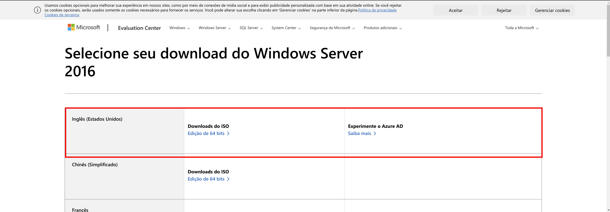Espere até que o download seja finalizado para continuar com a instalação.
Com o VirtualBox aberto basta clicar em “Máquina -> Novo”
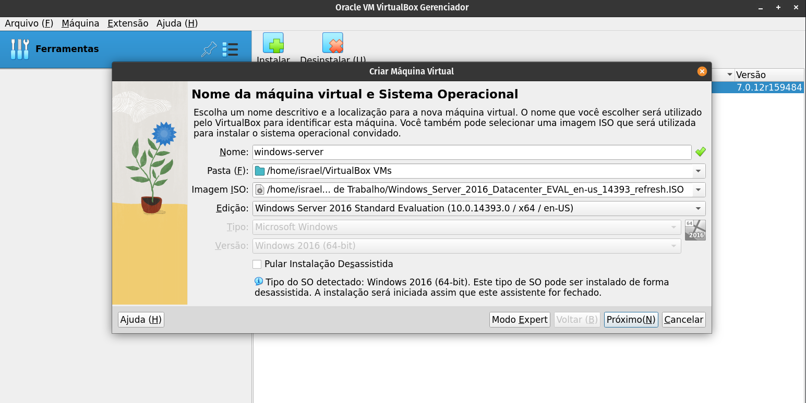No próximo passo, deve-se selecionar um nome para o servidor, a pasta onde a máquina virtual será salva e o arquivo .iso que foi baixado anteriormente.
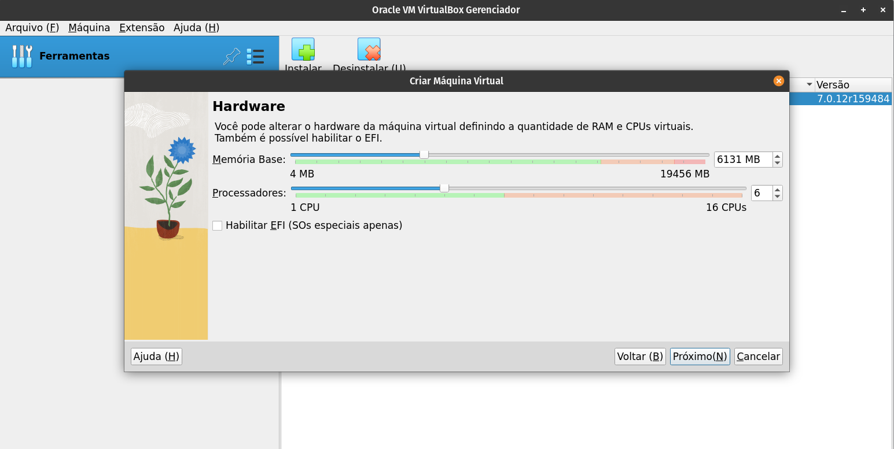No passo seguinte é destinado a configuração do “Hardware” da máquina virtual, no meu caso estou utilizando 6GB de memória RAM e 6 núcleos de processamento, você pode escolher de acordo com as limitações da sua máquina.
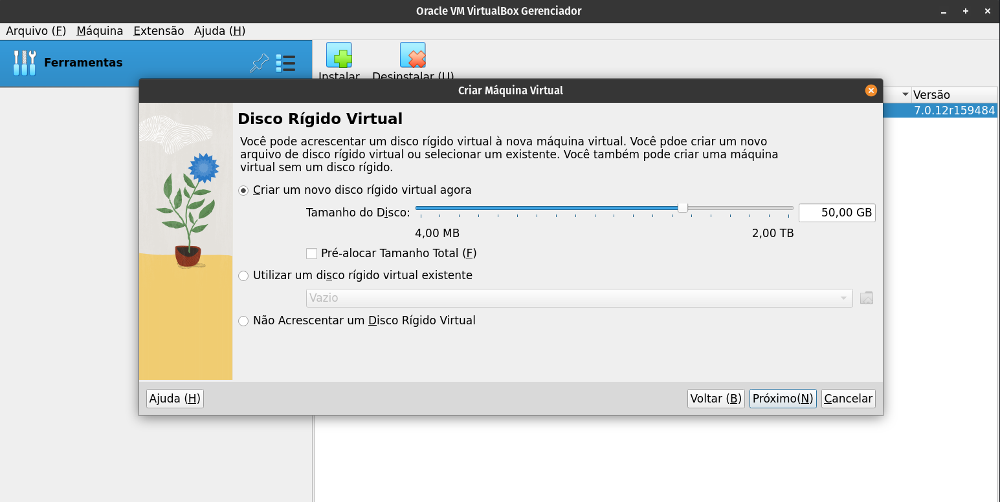Nesta etapa, define-se o tamanho do disco que será alocado para a máquina virtual. Novamente, você pode selecionar o tamanho conforme as limitações do seu hardware. Para o Windows Server 2016, é recomendado um tamanho mínimo de 50GB.
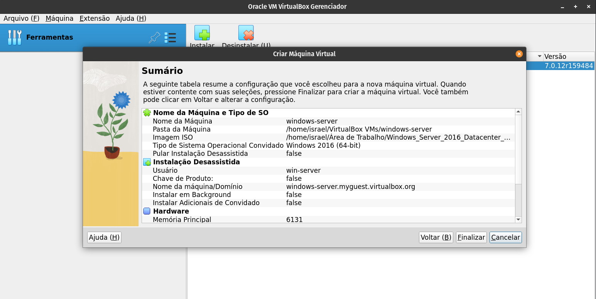Ao final irá aparecer um resumo da configurações feitas, para prosseguir basta clicar em “finalizar”

Antes de começar a instalação altere a configuração de rede de modo
NAT
para o modo BRIGDE e é aconselhável desconectar a máquina
virtual da internet para tornar o processo mais rápido.

Depois de fazer as mudanças necessárias, clique no botão "Iniciar" para começar o processo de instalação.
Para começar a instalação, na primeira tela que aparece selecione o idioma que deseja instalar, o formato de hora e moeda e o teclado ou método de entrada e então clique em "Next".
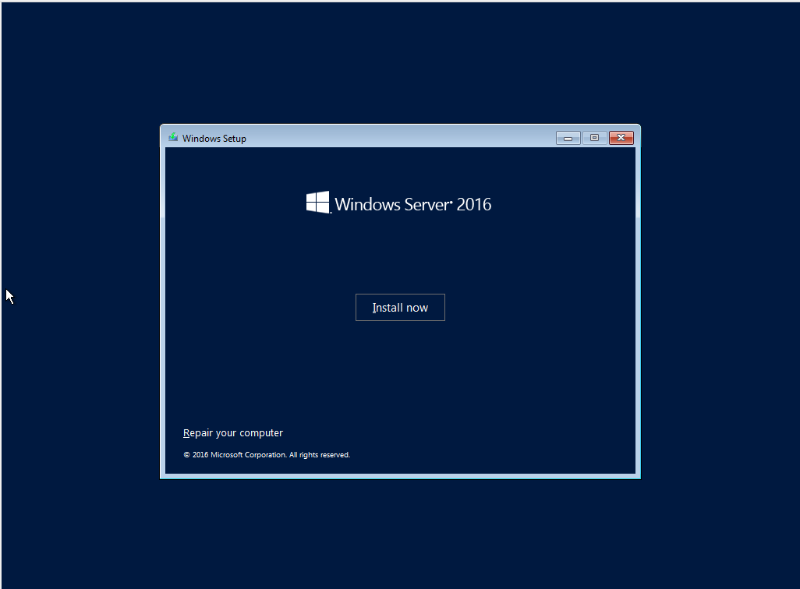Na próxima tela clique em "Install Now" para iniciar o processo de instalação.
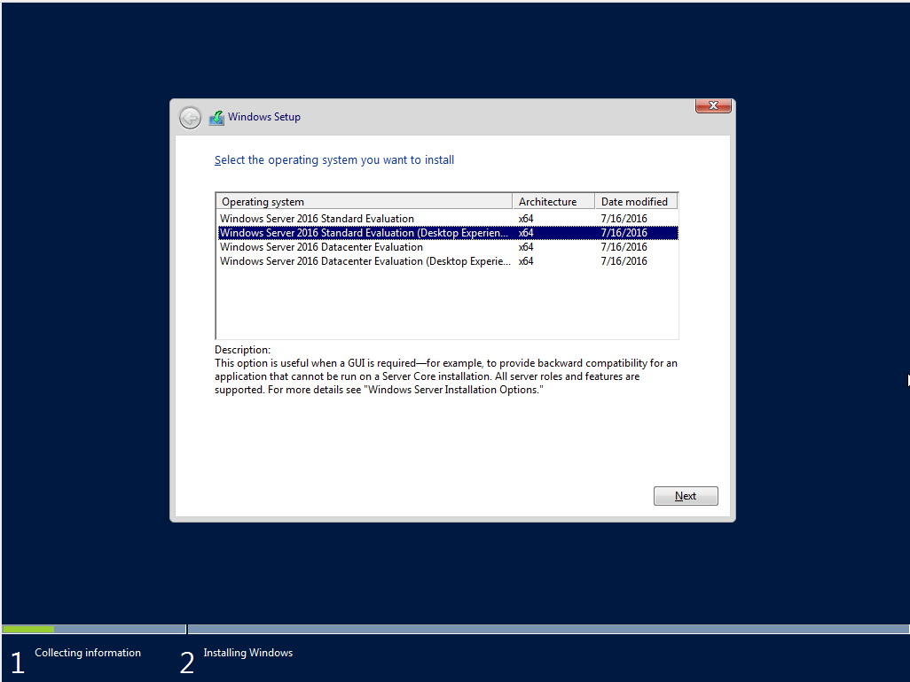Na tela de seleção do sistema operacional, selecione a opção "Windows Server 2016 Standard Evaluation (Desktop Experience)" para instalar a versão padrão com interface gráfica.
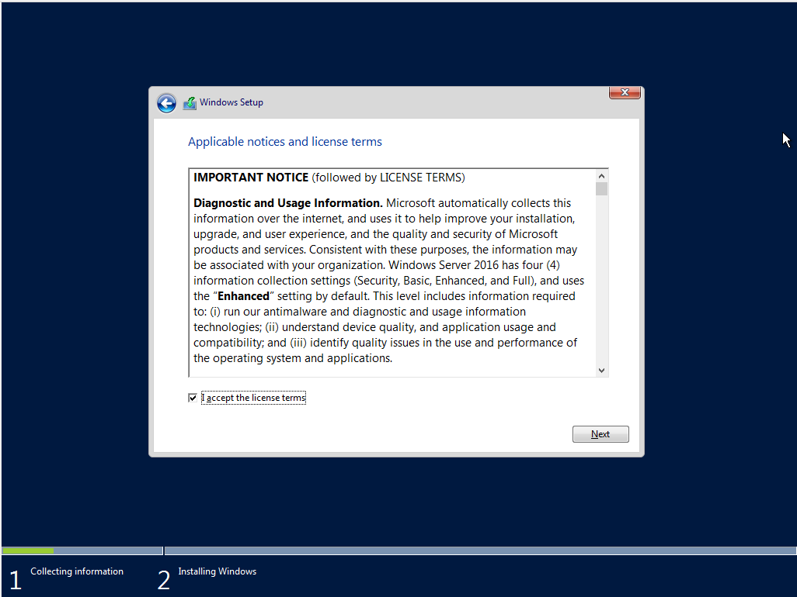Aceite os termos para continuar.
Escolha o tipo de instalação "Custom: Install Windows only (advanced)" para fazer uma instalação personalizada e prossiga clicando em "Next".
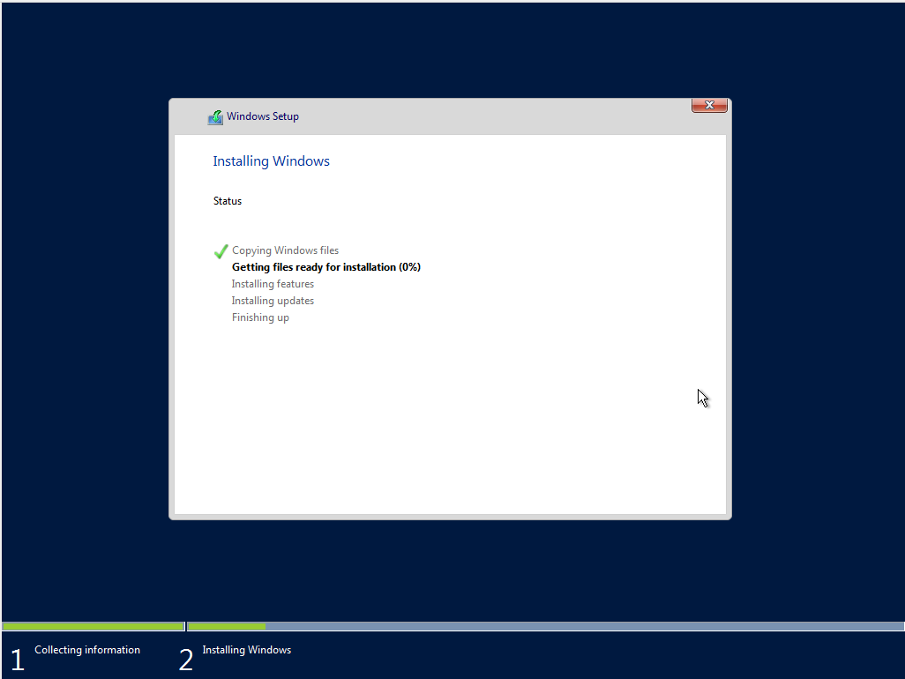Aguarde enquanto o Windows Server é instalado no disco que você escolheu. Uma vez concluída a instalação, o sistema será reiniciado automaticamente. Aguarde enquanto o Windows Server realiza as configurações iniciais.
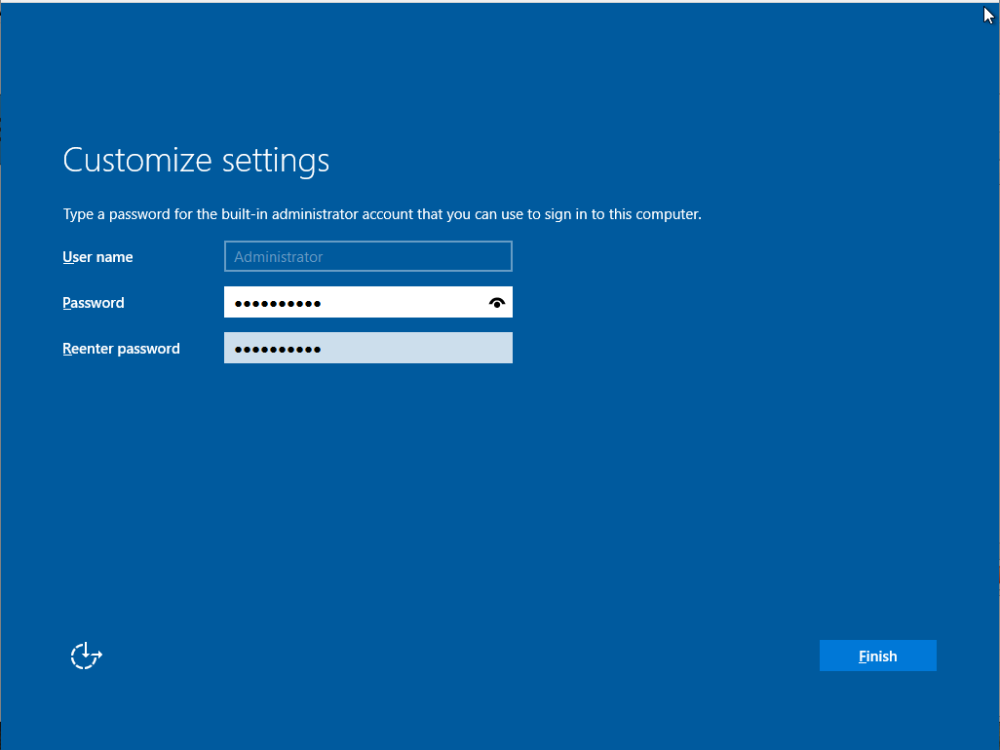Na etapa de configuração do usuário e senha, digite o nome de usuário ea senha desejados e depois clique em "Finish" para finalizar
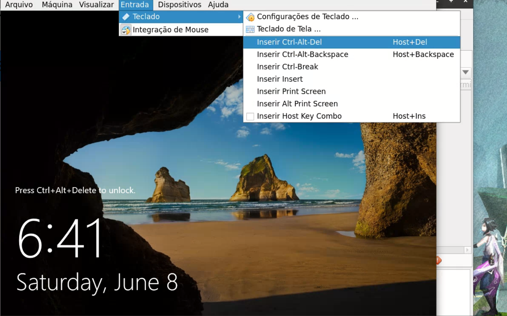
Como eu estou utilizando o Linux, ao clicar
Ctrl + Alt + Del é a minha máquina real que responde a esse
comando, por isso tive que clicar em "Entrada" no menu superior, depois em
"Teclado" e por fim em "Inserir Ctrl-Alt-Del".
Entre com a senha escolhida dois passos atrás.
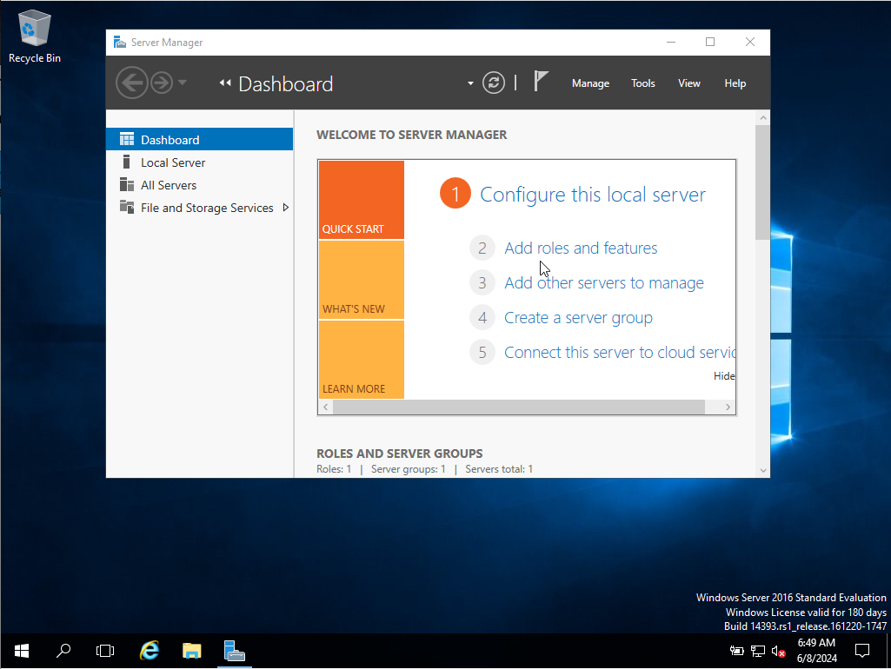Feito, a instalação está finalizada. Agora você está na área de trabalho do Windows Server.